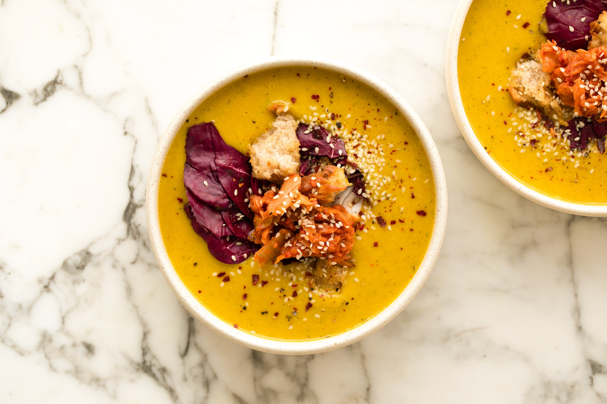

Home
Zucchini soup

Creamy soup full of flavor.
Ingredients
- Zucchini
- Onion
- Garlic
- Carrots
- Salt
- Pepper
Steps
- Cook the onion and the garlic together for a few minutes
- Add the carrot and then the chopped zucchini
- Cook for a few minutes and cover everything with water
- When everything is soft, mix everything together